### Data wrangling
library(readr)
library(dplyr)
library(tidyr)
library(forcats) ### tools for working with factors (e.g., reordering)
library(janitor) ### clean column names
### Visualization
library(ggplot2)
library(scales) ### axis formatting helpers
library(viridis) ### colorblind-friendly palettes
### Interactive output
library(leaflet)
library(DT)1 Overview
ggplot2 is a popular package for visualizing data in R. From the home page:
ggplot2is a system for declaratively creating graphics, based on The Grammar of Graphics. You provide the data, tellggplot2how to map variables to aesthetics, what graphical primitives to use, and it takes care of the details.
The goal of this lesson is to explain the fundamentals of how ggplot2 work, introduce useful functions for customizing your plots, and inspire you to go and explore this awesome resource for visualizing your data.
Note
ggplot2 vs base graphics in R vs others
There are many different ways to plot your data in R. All of them can be used to make functional plots! However, ggplot2 uses a reasonably intuitive syntax to build up a plot in layers and customize it in many different ways. It also has a lot of built in themes and color palettes that can make your plots look nice with just a few lines of code.
Base R graphics (plot(), hist(), etc) can be helpful for simple, quick-and-dirty plots, e.g., for data exploration, but it can be hard to decipher and customize. ggplot2 can be used for almost everything else, including publication-ready graphics.
2 Setup
Make sure you’re in the right project (training_{USERNAME}). Use Git Pull to check for any changes. Then, create a new Quarto document, delete the default text below the YAML header, and save this document.
TipQuarto header options?
Consider adding Quarto options to the YAML header to control the output:
format:
html:
code-fold: true
code-summary: "Show code"
embed-resources: true
execute:
warning: false
message: false2.1 Load Packages
Load the packages we’ll need. They’re grouped by purpose to make it easier to remember what each one does.
2.2 Load the Data
Download the data from the EDI Data Repository: scroll to Resources, click the “Socioecological monitoring data” download button, and save to your data/ folder. Then read it in:
# read in data from the data directory after manually downloading data
delta_visits_raw <- read_csv("data/Socioecological_monitoring_data.csv")2.3 Learn About the Data
For this session we are going to be working with data on Socioecological Monitoring on the Sacramento-San Joaquin Delta. Check out the documentation: read the abstract, explore the metadata, check the intellectual rights, etc.
2.4 Explore the Data
Finally, let’s explore the data we just read into our working environment.
### Check out column names
colnames(delta_visits_raw)
### Peek at each column and class
glimpse(delta_visits_raw)
### From when to when
range(delta_visits_raw$Date)
### Which time of day?
unique(delta_visits_raw$Time_of_Day)3 Prepare the Data
We nearly always need to do some wrangling before we can analyze and plot our data. Here we will wrangle our data into a tidy format that is ggplot2-friendly.
3.1 Clean Column Names
janitor::clean_names() converts all column names to consistent snake_case in a single line:
colnames(delta_visits_raw)[1:6][1] "EcoRestore_approximate_location" "Reach"
[3] "Latitude" "Longitude"
[5] "Date" "Time_of_Day" delta_visits <- delta_visits_raw %>%
janitor::clean_names()
colnames(delta_visits)[1:6][1] "eco_restore_approximate_location" "reach"
[3] "latitude" "longitude"
[5] "date" "time_of_day" 3.2 Reshape to Long (Tidy) Format
Recall the tidy data principles.
- Each variable is a column; each column is a variable.
- Each observation is a row; each row is an observation.
- Each value is a cell; each cell is a single value.
Which (if any) of these principles are violated in our data frame delta_visits?
ggplot2 works best with tidy data — one row per observation. Our visitor-type counts are spread across multiple columns, so we pivot them (using tidyr::pivot_longer()) into a single visitor_type column:
visits_long <- delta_visits %>%
tidyr::pivot_longer(
cols = c(sm_boat, med_boat, lrg_boat, bank_angler, scientist, cars),
names_to = "visitor_type",
values_to = "quantity"
) %>%
### shorten the long name:
dplyr::rename(restore_loc = eco_restore_approximate_location) %>%
### drop the notes column:
dplyr::select(-notes)
head(visits_long)# A tibble: 6 × 8
restore_loc reach latitude longitude date time_of_day visitor_type
<chr> <chr> <dbl> <dbl> <date> <chr> <chr>
1 Decker Island Brannan … 38.1 -122. 2017-07-07 unknown sm_boat
2 Decker Island Brannan … 38.1 -122. 2017-07-07 unknown med_boat
3 Decker Island Brannan … 38.1 -122. 2017-07-07 unknown lrg_boat
4 Decker Island Brannan … 38.1 -122. 2017-07-07 unknown bank_angler
5 Decker Island Brannan … 38.1 -122. 2017-07-07 unknown scientist
6 Decker Island Brannan … 38.1 -122. 2017-07-07 unknown cars
# ℹ 1 more variable: quantity <dbl>4 Plot With ggplot2
4.1 Essential Components
Every ggplot2 call requires four essential components:
ggplot()opens the plot (note, the package is calledggplot2but the function is justggplot().)data =defines the data frame to useaes()maps variables to visual properties (axes, color, fill, etc.)geom_*()defines the plot type (bar, point, line, box, etc.)
Layers are added with +.
ggplot(data = daily_visits_loc,
aes(x = restore_loc, y = daily_visits)) +
geom_col()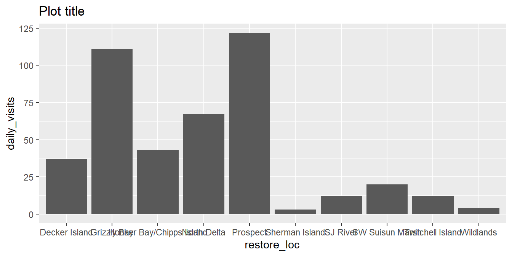
Tip
data = and aes() can also live inside the geom_*() call — useful when layering multiple data sources! But for simple plots, a good practice is to keep them in ggplot() for clarity.
Variations on data= and aes(): Options 1 - 3 produce the same output as above. Option 4 flips the axes. Examine the code and the outputs.
Data and mapping defined in ggplot() function:
ggplot(data = daily_visits_loc,
aes(x = restore_loc, y = daily_visits)) +
geom_col()
Data defined in ggplot() function; mapping defined in geom_*():
ggplot(data = daily_visits_loc) +
geom_col(aes(x = restore_loc,
y = daily_visits))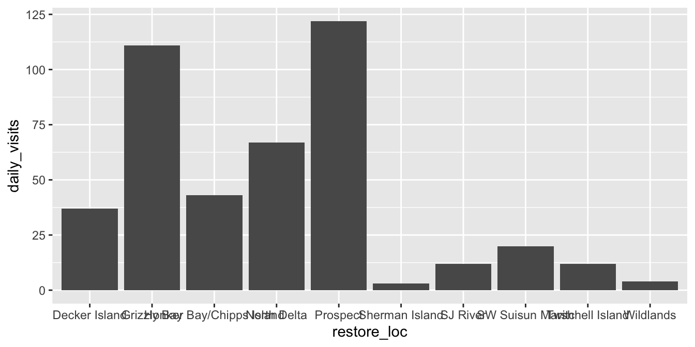
Data and mapping both defined in geom_*()
ggplot() +
geom_col(data = daily_visits_loc,
aes(x = restore_loc, y = daily_visits))
Data and mapping both defined in geom_*(), but with x and y flipped. Why might you prefer this?
ggplot() +
geom_col(data = daily_visits_loc,
aes(y = restore_loc, x = daily_visits))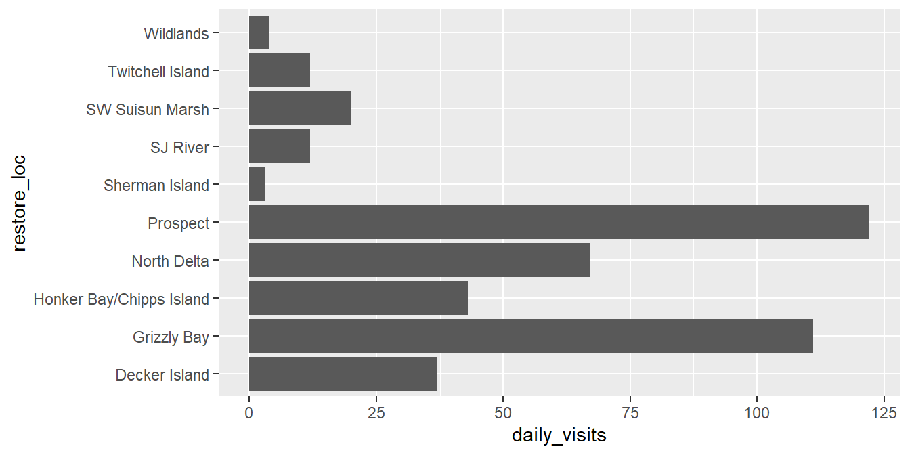
4.2 Different geom_* Types
Having the basic structure with the essential components in mind, we can easily change the type of graph by updating the geom_*(). First we will filter the data to remove some extreme values, and to focus on boat users specifically.
daily_boats_filtered <- daily_visits_loc %>%
filter(daily_visits < 30,
visitor_type %in% c("sm_boat", "med_boat", "lrg_boat"))ggplot(data = daily_boats_filtered, aes(x = visitor_type, y = daily_visits)) +
geom_boxplot()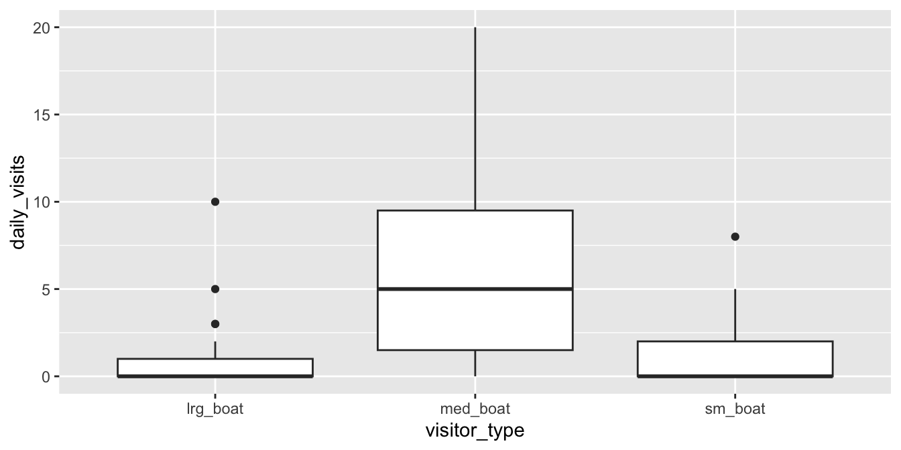
Note, axes flipped to make it easier to read the labels.
ggplot(data = daily_boats_filtered, aes(x = daily_visits, y = visitor_type)) +
geom_violin()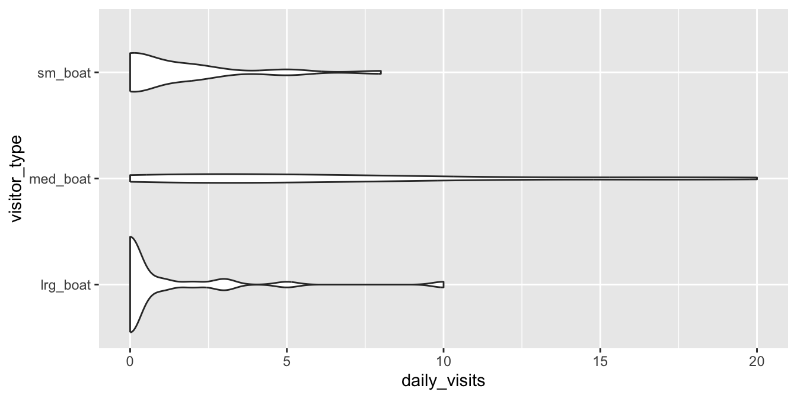
Axes flipped, and all observations now plotted using geom_jitter(), which adds a small amount of random variation to the location of each point, to prevent overplotting. Note the geom_*() functions have additional parameters to control appearance.
ggplot(data = daily_boats_filtered, aes(x = daily_visits, y = visitor_type)) +
geom_boxplot() +
geom_jitter(height = .1)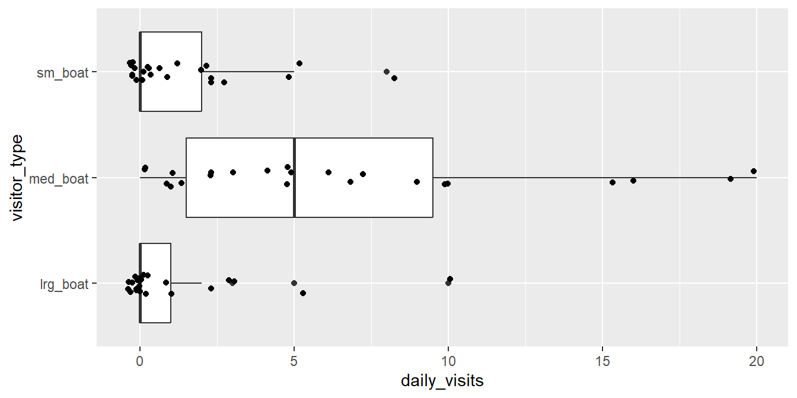
Note, new aesthetics: color is now mapped to visitor_type. Note the legend!
ggplot(data = daily_boats_filtered, aes(x = date, y = daily_visits)) +
geom_point(aes(color = visitor_type))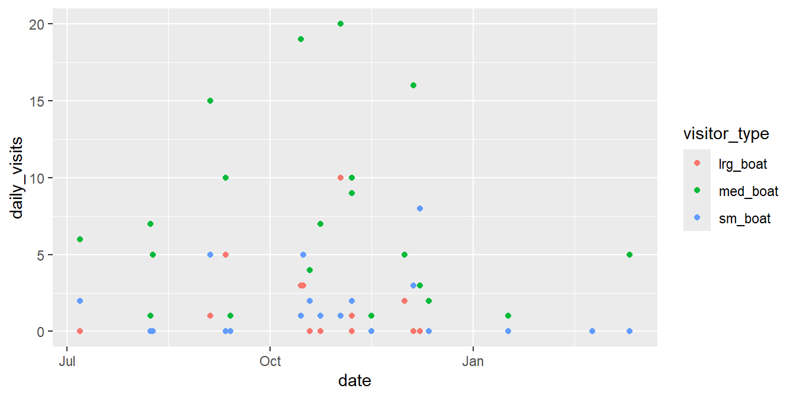
5 Customize the Plot
We’ll build our final bar chart in two focused steps: labels & theme, then color & ordering.
5.1 Labels, Axes, and Tthemes
TipInside vs. outside
aes()
- Inside
aes(): maps a variable to an aesthetic: color tracks the data.
- Outside
aes(): sets a constant: all elements get the same color.
Set fill to a specific, valid color outside aes(). All bars are the same color!
ggplot(data = daily_visits_loc,
aes(x = restore_loc, y = daily_visits)) +
geom_col(fill = "steelblue")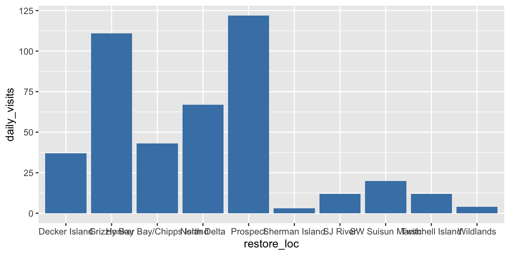
Set fill to map to a single variable, inside aes() (whether the result makes sense, that’s on you)
ggplot(data = daily_visits_loc,
aes(x = restore_loc, y = daily_visits)) +
geom_col(aes(fill = visitor_type))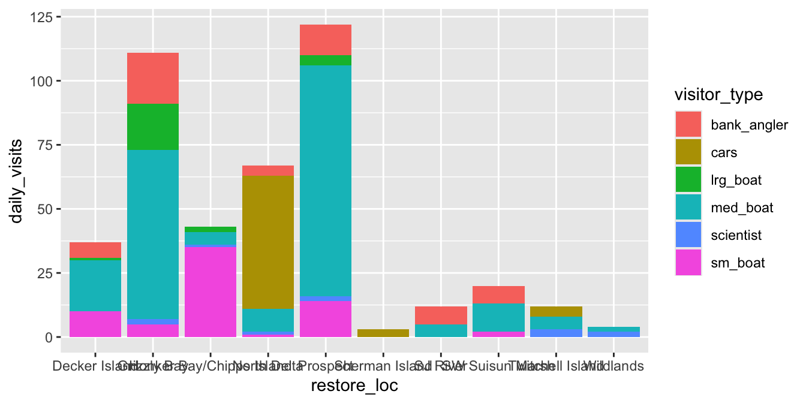
This doesn’t throw an error, but clearly does not reflect what you might be hoping for!
ggplot(data = daily_visits_loc,
aes(x = restore_loc, y = daily_visits, fill = "blue")) +
geom_col()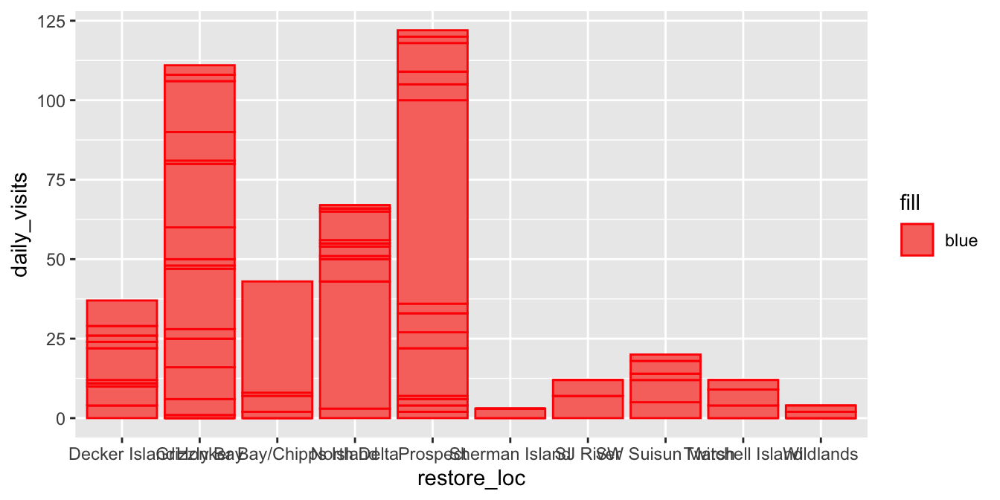
To our basic bar chart, let’s clean it up using some of the above ideas, and some new ones:
- Map
visitor_typetofill - flip the axes so location labels are readable
- add informative labels
- apply a clean theme
ggplot(data = daily_visits_loc,
aes(y = restore_loc, x = daily_visits, fill = visitor_type)) +
geom_col() +
labs(x = "Number of Visits",
y = "Restoration Location",
fill = "Visitor Type",
title = "Total Visits to Delta Restoration Areas by Visitor Type",
subtitle = "Sum of all visits July 2017 - March 2018") +
scale_x_continuous(breaks = seq(0, 120, 20), expand = c(0, 0)) +
theme_bw() +
theme(
legend.position = "bottom",
axis.ticks.y = element_blank()
)- 1
-
labs()to rename axes, legend, title, subtitle, etc.
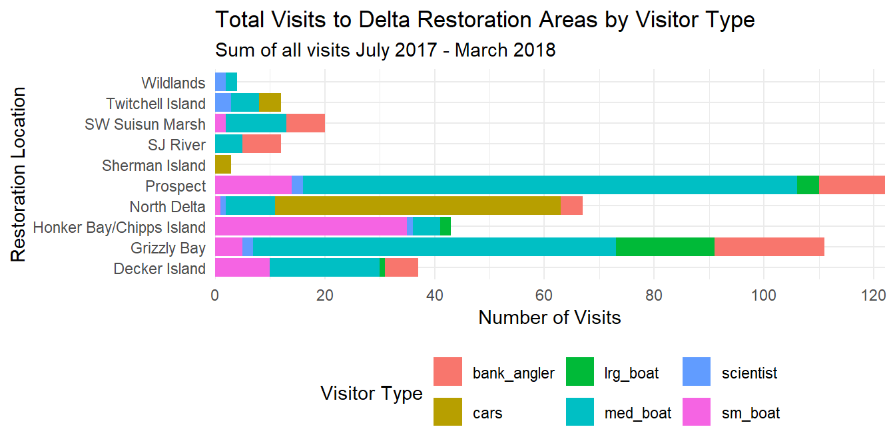
TipBuilt-in and custom themes
Always put theme() after built-in themes like theme_bw(), or the built-in will override your tweaks.
You can also create your own custom theme object to reuse it across plots, just as you would a built-in theme:
my_theme <- theme_bw(base_size = 14) +
theme(legend.position = "bottom", axis.ticks.y = element_blank())5.2 3.2 Ordering bars and adding color
ggplot2 defaults to alphabetical order. Use fct_reorder() from forcats to sort by a meaningful variable instead. Add a colorblind-friendly palette with scale_fill_viridis_d():
daily_visits_totals <- daily_visits_loc %>%
group_by(restore_loc) %>%
mutate(total = sum(daily_visits)) %>%
ungroup() %>%
mutate(restore_loc = fct_reorder(restore_loc, total)) # ascending; use desc(total) to flip
my_theme <- theme_bw(base_size = 14) +
theme(legend.position = "bottom", axis.ticks.y = element_blank())
ggplot(data = daily_visits_totals,
aes(y = restore_loc, x = daily_visits, fill = visitor_type)) +
geom_col() +
scale_fill_viridis_d() +
scale_x_continuous(breaks = seq(0, 120, 20), expand = c(0, 0)) +
labs(
x = "Number of Visits",
y = "Restoration Location",
fill = "Visitor Type",
title = "Total Visits to Delta Restoration Areas by Visitor Type",
subtitle = "Sum of all visits during the study period"
) +
my_theme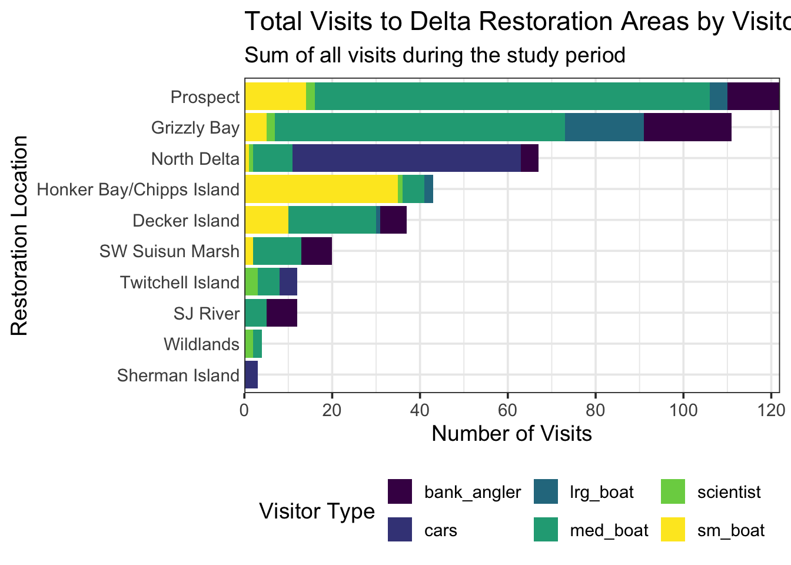
5.3 3.3 Saving your plot
ggsave("figures/visit_restore_site_delta.jpg", width = 12, height = 6, units = "in")ggsave() automatically saves the last plot displayed, or pass plot = my_object to save a specific one.
5.3.1 Colors
The last thing we will do to our plot is change the color. To do this we are going to use a function from the viridis package. This package provides different color palettes that are designed to improve graph readability for readers with common forms of color blindness and/or color vision deficiency. With viridis, there are multiple other color palette packages or color palettes out there that you can use to customize your graphs. We could spend a whole session talking about colors in R! For the purpose of this lesson we are just going to keep it brief and show one function of the viridis package that will make our plot colors look better.
ggplot(data = daily_visits_totals,
aes(x = daily_visits, y = restore_loc,
fill = visitor_type)) +
geom_col() +
scale_fill_viridis_d() +
labs(x = "Number of Visits",
y = "Restoration Location",
fill = "Type of Visitor",
title = "Total Number of Visits to Delta Restoration Areas by visitor type",
subtitle = "Sum of all visits during study period") +
scale_x_continuous(breaks = seq(0,120, 20), expand = c(0,0)) +
my_themeThings to keep in mind when choosing a color palette are the number of variables you have and how many colors your palette has. And if you need a discrete or a continuous color palette. Find more information about colors in this R color cheatsheet.
5.3.2 Saving plots
Saving plots using ggplot is easy! The ggsave() function will save either the last plot you created, or any plot that you have saved to an object. You can specify what output format you want, size, resolution, etc. See ?ggsave() for documentation.
For example, if we want to save our current plot to an existing folder named “figures”, we can do this:
ggsave("figures/visit_restore_site_delta.jpg", width = 12, height = 6, units = "in")5.3.3 Creating multiple plots
An easy way to plot another aspect of your data is using the function facet_wrap(). This function takes a mapping to a variable using the syntax ~{variable_name}. The ~ (tilde) is a model operator which tells facet_wrap() to model each unique value within variable_name to a facet in the plot.
The default behavior of facet wrap is to put all facets on the same x and y scale. You can use the scales argument to specify whether to allow different scales between facet plots (e.g scales = "free_y" to free the y axis scale). You can also specify the number of columns using the ncol = argument or number of rows using nrow =.
facet_plot <- ggplot(data = daily_visits_totals,
aes(x = visitor_type, y = daily_visits,
fill = visitor_type)) +
geom_col() +
facet_wrap(~restore_loc,
scales = "free_y",
ncol = 5,
nrow = 2) +
scale_fill_viridis_d() +
labs(x = "Type of visitor",
y = "Number of Visits",
title = "Total Number of Visits to Delta Restoration Areas",
subtitle = "Sum of all visits during study period") +
theme_bw() +
theme(legend.position = "bottom",
axis.ticks.x = element_blank(),
axis.text.x = element_blank())
facet_plot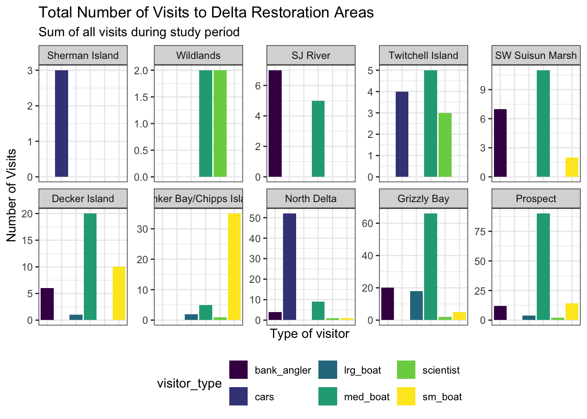
We can save this plot to our figures folder too. Note that this time we are specifically mentioning the object we want to save.
ggsave("figures/visit_restore_site_facet.jpg", plot = facet_plot, width = 12, height = 8, units = "in")6 Interactive visualization
6.1 Tables with DT
Now that we know how to make great static visualizations, let’s introduce two other packages that allow us to display our data in interactive ways. These packages really shine when used with GitHub Pages, so at the end of this lesson we will publish our figures to the website we created earlier.
First let’s show an interactive table of unique sampling locations using DT. We will start by creating a data.frame containing unique sampling locations.
locations <- visits_long %>%
distinct(restore_loc, .keep_all = T) %>%
select(restore_loc, latitude, longitude)
head(locations)# A tibble: 6 × 3
restore_loc latitude longitude
<chr> <dbl> <dbl>
1 Decker Island 38.1 -122.
2 SW Suisun Marsh 38.2 -122.
3 Grizzly Bay 38.1 -122.
4 Prospect 38.2 -122.
5 SJ River 38.1 -122.
6 Wildlands 38.3 -122.The dplyr::distinct() function comes pretty handy when you want to filter unique values in a column. In this case we use the .keep_all = T argument to keep all the columns of our data frame so we can have the latitude and longitude of each of the locations. If we don’t add this argument, we would end up with a data frame with only one column: restore_loc and 10 rows, one for each of the unique locations.
Now we can display this table as an interactive table using datatable() from the DT package.
datatable(locations)6.2 Maps with leaflet
The leaflet() package allows you to make basic interactive maps using just a couple lines of code. Note that unlike ggplot2, the leaflet package uses pipe operators (%>%) and not the additive operator (+).
The addTiles() function without arguments will add base tiles to your map from OpenStreetMap. addMarkers() will add a marker at each location specified by the latitude and longitude arguments. Note that the ~ symbol is used here to model the coordinates to the map (similar to facet_wrap() in ggplot).
leaflet(locations) %>%
addTiles() %>%
addMarkers(
lng = ~ longitude,
lat = ~ latitude,
popup = ~ restore_loc
)You can also use leaflet to import Web Map Service (WMS) tiles. For example, we can use any of the base maps provided by USGS in the National Map archive. For example, let’s use the USGSTopo base map. In this example, we also demonstrate how to create a more simple circle marker, the look of which is explicitly set using a series of style-related arguments.
leaflet(locations) %>%
addWMSTiles(
"https://basemap.nationalmap.gov/arcgis/services/USGSTopo/MapServer/WmsServer",
layers = "0",
options = WMSTileOptions(format = "image/png", transparent = TRUE)) %>%
addCircleMarkers(
lng = ~ longitude,
lat = ~ latitude,
popup = ~ restore_loc,
radius = 5,
# set fill properties
fillColor = "salmon",
fillOpacity = 1,
# set stroke properties
stroke = T,
weight = 0.5,
color = "white",
opacity = 1)We can also layer base maps. In this case the USGSImageryTopo base map with the USGSHydroCached base map. Note that the url where the map is retrieved is very similar for each USGS base map.
leaflet(locations) %>%
addWMSTiles(
"https://basemap.nationalmap.gov/arcgis/services/USGSImageryTopo/MapServer/WmsServer",
layers = "0",
options = WMSTileOptions(format = "image/png", transparent = TRUE)) %>%
addWMSTiles(
"https://basemap.nationalmap.gov/arcgis/services/USGSHydroCached/MapServer/WmsServer",
layers = "0",
options = WMSTileOptions(format = "image/png", transparent = TRUE)) %>%
addCircleMarkers(
lng = ~ longitude,
lat = ~ latitude,
popup = ~ restore_loc,
radius = 5,
# set fill properties
fillColor = "salmon",
fillOpacity = 1,
# set stroke properties
stroke = T,
weight = 0.5,
color = "white",
opacity = 1)Leaflet has a ton of functionality that can enable you to create some beautiful, functional maps with relative ease. Here is an example of some we created as part of the State of Alaskan Salmon and People (SASAP) project, created using the same tools we showed you here. This map hopefully gives you an idea of how powerful the combination of Quarto or RMarkdown and GitHub Pages can be.
7 Publish the Data Visualization lesson to your webpage
TipSteps
- Save the
qmdyou have been working on for this lesson. - “Render” the
qmd. This is a good way to test if everything in your code is working. - Go to your
index.qmdand the link to thehtmlfile with this lesson’s content. - Save and render
index.qmdto anhtml. - Use the
Gitworkflow:Stage > Commit > Pull > Push
8 ggplot2 Resources
- Why not to use two axes, and what to use instead: The case against dual axis charts by Lisa Charlotte Rost.
- Customized Data Visualization in
ggplot2by Allison Horst. - A
ggplot2tutorial for beautiful plotting in R by Cedric Scherer.